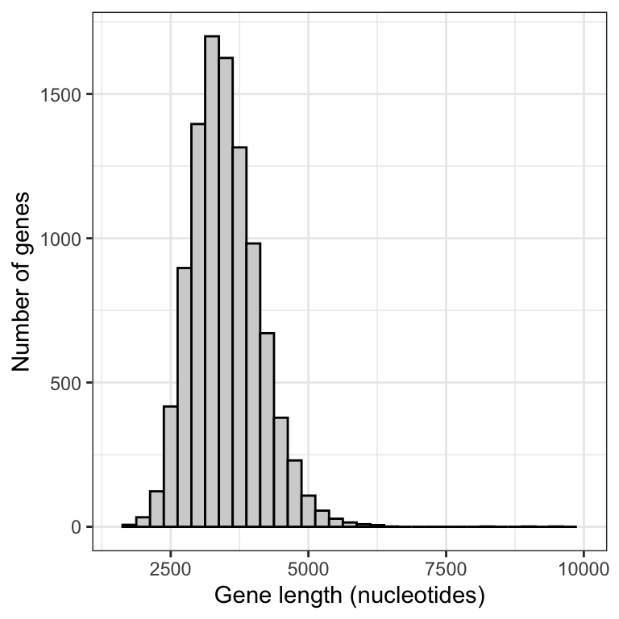
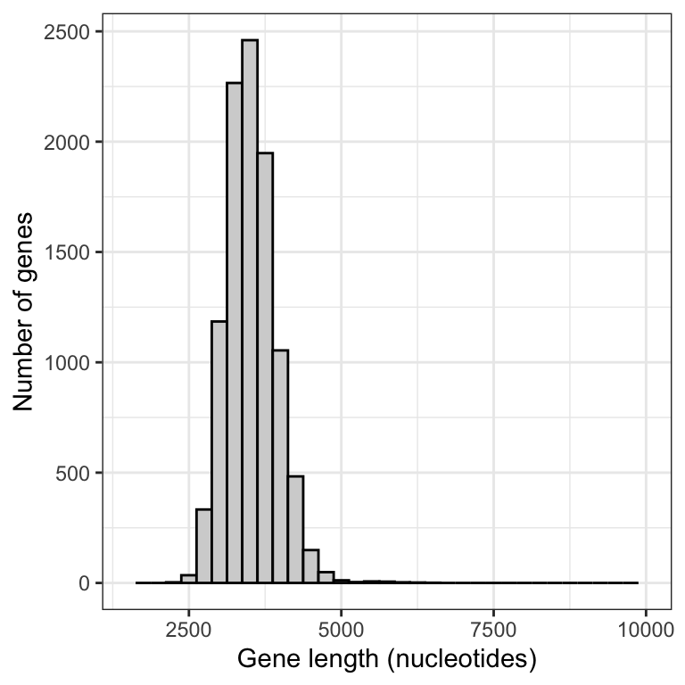
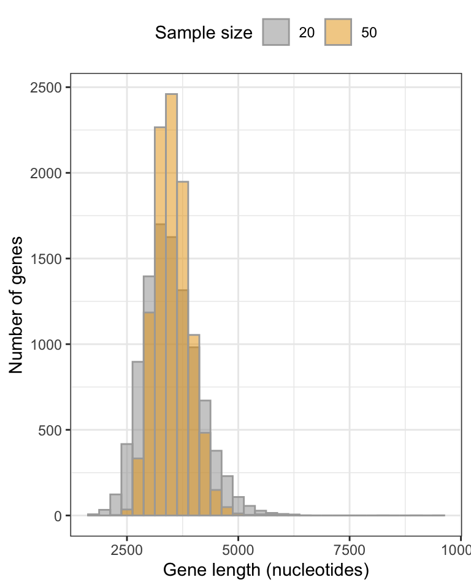

library(dplyr)
library(ggplot2)
library(readr)
library(knitr)
library(biol202)8 Sampling, Estimation, & Uncertainty
Tutorial learning objectives
In this tutorial you will:
- Learn how to take a random sample of observations from a dataset
- Learn through simulation what “sampling error” is
- Learn about sampling distributions through simulation
- Learn how to calculate the standard error of the mean
- Learn how to calculate the “rule of thumb 95% confidence interval”
8.1 Load packages and import data
Let’s load some familiar packages first:
We will also need a new package called infer, so install that package using the procedure you previously learned, then load it:
library(infer)Import Data
For this tutorial we’ll use the human gene length dataset that is used in Chapter 4 of the Whitlock & Schluter text.
The dataset is described in example 4.1 in the text.
Let’s import it:
data(humangenelength)Get an overview of the data
We’ll use glimpse to get an overview:
humangenelength %>%
glimpse()
#> Rows: 22,385
#> Columns: 4
#> $ gene <chr> "ENSG00000000003.14", "ENSG00000000005.5", "ENSG0000000041…
#> $ size <dbl> 3796, 1339, 1161, 6364, 4355, 2729, 4127, 2356, 3813, 3811…
#> $ name <chr> "TSPAN6", "TNMD", "DPM1", "SCYL3", "C1orf112", "FGR", "CFH…
#> $ description <chr> "tetraspanin", "tenomodulin", "dolichyl-phosphate", "SCY1"…The “size” variable is the key one: it includes the gene lengths (number of nucleotides) for each of the 22385 genes in the dataset.
8.2 Functions for sampling
To illustrate the concepts of “sampling error” and the “sampling distribution of the mean”, we’re going to make use of datasets that include measurements for all individuals in a “population” of interest, and we’re going to take random samples of observations from those datasets. This mimics the process of sampling at random from a population.
There are two functions that are especially helpful for taking random samples from objects.
- The
samplefunction in the base R package is easy to use for taking a random sample from a vector of values. Look at the help function for it:
?sampleThe second useful function is the slice_sample function from the dplyr package. This function takes random samples of rows from a dataframe or tibble.
?slice_sampleNote that both functions have a replace argument that dictates whether the sampling we conduct occurs with or without replacement. For instance, the following code will not work (try copying and pasting into your console):
sample(1:6, size = 10, replace = F)Here we’re telling R to sample 10 values from a vector that includes only 6 values (one through six), and with the replace = F argument we told R not to put the sampled numbers back in the pile for future sampling.
If instead we specified replace = T, as shown below, then we be conducting sampling with replacement, and sampled values are placed back in the pool each time, thus enabling the code to work (try it):
sample(1:6, size = 10, replace = T)
Note
Whether we wish to sample without replacement or not depends on the question / context (see page 138 in Whitlock & Schluter). For most of the questions and contexts we deal with in this course, we do wish to sample with replacement. Why? Because we are typically assuming (or mimicking a situation) that we’re randomly sampling from a very large population, in which case the probability distribution of possible values in the individuals that remain doesn’t change when we sample. This is not the case if we’re sampling from a small population.
8.2.1 Setting the “seed” for random sampling
Functions such as sample and slice_sample have a challenge to meet: they must be able to take samples that are as as random as possible. On a computer, this is easier said then done; special algorithms are required to meet the challenge. R has some pretty good ones available, so we don’t have to worry about it (though to be honest, they can only generate “pseudorandom” numbers, but that’s good enough for our purposes!).
However, we DO need to worry about computational reproducibility.
Imagine we have authored a script for a research project, and the script makes use of functions such as sample. Now imagine that someone else wanted to re-run our analyses on their own computer. Any code chunks that included functions such as sample would produce different results for them, because the function takes a different random sample each time it’s run!
Thankfully there’s a way to ensure that scripts implementing random sampling can be computationally reproducible: we can use the set.seed function.
Warning
This assumes you are using R version 4 or later (e.g. 4.1). The set.seed function used a different default algorithm in versions of R prior to version 4.0.
Let’s provide the code chunk then explain after:
set.seed(12)The set.seed function requires an integer value as an argument. You can pick any number you want as the seed number. Here we’ll use 12, and if you do too, you’ll get the same results as in the tutorial.
Let’s test this using the runif function, which generates random numbers between user-designated minimum and maximum values (the default is numbers between zero and one).
Let’s include the set.seed function right before using the runif function, and here we’ll again use a seed number of 12.
set.seed(12)
runif(3)
#> [1] 0.06936092 0.81777520 0.94262173Here we told the runif function to generate three random numbers, and it used the default minimum and maximum values of zero and one.
Now let’s try a different seed:
set.seed(25)
runif(3)
#> [1] 0.4161184 0.6947637 0.1488006So long as you used the same seed number, you should have gotten the same three random numbers as shown above.
Note
When you are authoring your own script or markdown document (e.g. for a research project), it is advisable to only set the seed once, at the beginning of your script or markdown document. When you run or knit your completed script/markdown, the seed will be set at the beginning, the code chunks will run in sequence, and each chunk that uses a random number generator will do so in a predictable way (based on the seed number). The script will be computationally reproducible. In contrast, when we’re trying out code (e.g. when working on tutorial material), we aren’t running a set sequence or number of code chunks, so we can’t rely on everyone getting the same output for a particular code chunk. For this reason you’ll see in the tutorial material that many of the code chunks that require use of a random number generator will include a set.seed statement, to ensure that everyone gets the same output from that specific code chunk (this isn’t always required, but often it is).
CautionActivity
Generate 10 random numbers using the runif function, and first set the seed number to 200.
8.3 Sampling error
Sampling error is the chance difference, caused by sampling, between an estimate and the population parameter being estimated
Here we’ll get a feel for sampling error using the human gene data.
Let’s use the slice_sample function to randomly sample n = 20 rows from the humangenelength tibble, and store them in a tibble object called “randsamp1”:
set.seed(12)
randsamp1 <- humangenelength %>%
slice_sample(n = 20, replace = FALSE) %>%
select(size)In the preceding chunk, we:
- set the seed (here using integer 12), so that everyone gets the same output for this code chunk
- tell R that we want the output from our code to be stored in an object named “randsamp1”
- use the
slice_samplefunction to randomly sample 20 rows from thehumangenelengthtibble, and to do so without replacement - use the
selectfunction to tell R to return only the “size” variable from the newly generated (sampled) tibble
Now let’s use the mean and sd base functions to calculate the mean and standard deviation using our sample.
We’ll assign the calculations to an object “randsamp1.mean.sd”, then we’ll present the output using the kable function.
randsamp1.mean.sd <- randsamp1 %>%
summarise(
Mean_genelength = mean(size, na.rm = TRUE),
SD_genelength = sd(size, na.rm = TRUE)
)Now present the output using the kable function so we can control the maximum number of digits shown.
Note
Using the kable approach to presenting tibble outputs ensures that, when knitted, your output shows a sufficient number of decimal places… something that doesn’t always happen without using the kable function.
kable(randsamp1.mean.sd, digits = 4)| Mean_genelength | SD_genelength |
|---|---|
| 3408.25 | 1443.698 |
Do your numbers match those above?
Let’s now draw another random sample of the same size (20), making sure to give the resulting tibble object a different name (“randsamp2”). Here, we won’t set the seed again, because all that is required is for everyone to get a different sample from the first one above; we don’t need to have everyone get the same sample, but it’s ok if we do.
randsamp2 <- humangenelength %>%
slice_sample(n = 20, replace = FALSE) %>%
select(size)And calculate the mean and sd:
randsamp2.mean.sd <- randsamp2 %>%
summarise(
Mean_genelength = mean(size, na.rm = TRUE),
SD_genelength = sd(size, na.rm = TRUE)
)And show using the kable function:
kable(randsamp2.mean.sd, digits = 4)| Mean_genelength | SD_genelength |
|---|---|
| 4381.35 | 2081.471 |
Are they the same as we saw using the first random sample? NO! This reflects sampling error.
CautionActivity
Repeat the process above to get a third sample of size 20 genes, and calculate the mean and standard deviation of gene length for that sample.
8.4 Sampling distribution of the mean
Now let’s learn code to conduct our own resampling exercise.
Let’s repeat the sampling exercise we did in the preceding section concerning sampling error, but this time repeat it many times, say 10000 times.
We’ll also calculate the mean gene length for each sample that we take, and store this value.
For this, we’ll use the newly installed infer package, and its handy function rep_slice_sample, which complements the slice_sample function we’ve used before.
Let’s look at the code then explain after:
gene.means.n20 <- humangenelength %>%
rep_slice_sample(n = 20, replace = FALSE, reps = 10000) %>%
summarise(
mean_length = mean(size, na.rm = T),
sampsize = as.factor(20)
)In the above chunk, we:
- Tell R to put the output from our functions into a new tibble object called “gene.means.n20”, with the “n20” on the end denoting the fact that we used a sample size of 20 for these samples
- use the
rep_slice_samplefunction to sample n = 20 rows at random from thehumangenelengthtibble, and repeat this “reps = 10000” times - next we use the familiar
summarisefunction to then create a new variable “mean_length”, which in the next line we define as the mean of the values in the “size” variable (and recall, at this point we have a sample of 20 of these) - we also create a new categorical (factor) variable “sampsize” that indicates what sample size we used for this exercise, and we store it as a factor rather than a number (we’re doing this because it will come in handy later)
Let’s look at the first handful of rows in the newly created tibble:
gene.means.n20
#> # A tibble: 10,000 × 3
#> replicate mean_length sampsize
#> <int> <dbl> <fct>
#> 1 1 3094. 20
#> 2 2 4705. 20
#> 3 3 2576. 20
#> 4 4 2957. 20
#> 5 5 3060. 20
#> 6 6 3768. 20
#> 7 7 3412. 20
#> 8 8 4258. 20
#> 9 9 3242. 20
#> 10 10 3134. 20
#> # ℹ 9,990 more rowsWe see that it is a tibble with 10000 rows and three columns: a variable called “replicate”, which holds the numbers one through the number of replicates run (here, 10000), a variable “mean_length” that we created, which holds the sample mean gene length for each of the replicate samples we took, and a variable “sampsize” that tells us the sample size used for each sample (here, 20).
Note
Pause: If we were to plot a histogram of these 10000 sample means, what shape do you think it would have? And what value do you think it would be centred on?
8.4.1 Visualize the sampling distribution
Let’s plot a histogram of the 10000 means that we calculated.
First, to figure out what axis limits we should set for our histogram, let’s get an idea of what the mean gene length values look like, using the base R summary function on the “mean_length” variable:
summary(gene.means.n20$mean_length)
#> Min. 1st Qu. Median Mean 3rd Qu. Max.
#> 1650 3066 3440 3498 3872 9609OK, so we see that the minimum and maximum values are 1650.2 (the “Min.” value) and 9609.4 (the “Max.” value). So this can inform our x-axis limits when constructing the histogram (note that you typically need to try out different maximum values for the y-axis limits).
Let’s first remind ourselves what the true mean gene length is in the entire population of genes. We’ll assign the output to an object “true.mean.length” and a variable called “Pop_mean”, then show using the kable approach.
true.mean.length <- humangenelength %>%
summarise(
Pop_mean = mean(size, na.rm = TRUE)
)Show using kable:
kable(true.mean.length, digits = 4)| Pop_mean |
|---|
| 3511.457 |
Now let’s plot the histogram of 10000 sample means:
gene.means.n20 %>%
ggplot(aes(x = mean_length)) +
geom_histogram(binwidth = 250, colour = "black", fill = "lightgrey") +
ylim(0, 1700) +
xlim(1500, 10000) +
xlab("Gene length (nucleotides)") +
ylab("Number of genes") +
theme_bw()
This histogram is an approximation of the sampling distribution of the mean for a sample size of 20 (to construct a real sampling distribution we’d need to take an infinite number of replicate samples).
Before interpreting the histogram, let’s first calculate the mean of the 10000 sample means, then display using the kable approach:
sample.mean.n20 <- gene.means.n20 %>%
summarise(
Sample_mean = mean(mean_length, na.rm = TRUE)
)Show using kable:
kable(sample.mean.n20, digits = 4)| Sample_mean |
|---|
| 3497.633 |
Note that the mean of the sample means is around 3498, which is pretty darn close to the true population mean of 3511.
This reflects the fact that, provided a good random sample, the sample mean is an unbiased estimate of the true population mean.
Now, let’s interpret the histogram:
- The vast majority of means are centred around the true population mean (around 3500)
- The frequency distribution unimodal, but is right (positively) skewed; it has a handful of sample means that are very large
The latter characteristic reflects the fact that the population of genes includes more than 100 genes that are extremely large. When we take a random sample of 20 genes, it is possible that - just by chance - our sample could include one or more of the extremely large genes in the population, and this would of course inflate the magnitude of our mean gene length in the sample.
Let’s repeat this sampling exercize using a larger sample size, say 50.
gene.means.n50 <- humangenelength %>%
rep_slice_sample(n = 50, replace = FALSE, reps = 10000) %>%
summarise(
mean_length = mean(size, na.rm = T),
sampsize = as.factor(50)
)Now plot a histogram, making sure to keep the x- and y-axis limits the same as we used above, so that we can compare the outputs
gene.means.n50 %>%
ggplot(aes(x = mean_length)) +
geom_histogram(binwidth = 250, colour = "black", fill = "lightgrey") +
xlim(1500, 10000) +
xlab("Gene length (nucleotides)") +
ylab("Number of genes") +
theme_bw()
Notice that there is much less positive skew to this frequency distribution.
Let’s produce a figure that allows us to directly compare the two sampling distributions.
First we need to combine the data into one tibble.
Note
New tool We can merge two tibbles (or data frames) together by rows using the bind_rows function from the dplyr package
The bind_rows function will simply append one object to another by rows. This requires that the two (or more) objects each have the same variables. In our case, the two objects have the same three variables.
gene.means.combined <- bind_rows(gene.means.n20, gene.means.n50)Now we have what we need to produce a graph that enables direct comparison of the two sampling distributions.
Note
This type of graph is not something you’ll need to be able to do for assignments!
gene.means.combined %>%
ggplot(aes(x = mean_length, fill = as.factor(sampsize))) +
geom_histogram(position = 'identity', colour = "darkgrey", alpha = 0.5, binwidth = 250) +
scale_fill_manual(values=c("#999999", "#E69F00")) +
xlab("Gene length (nucleotides)") +
ylab("Number of genes") +
theme_bw() +
theme(legend.position = "top") +
guides(fill = guide_legend(title = "Sample size"))
We can see that the smaller sample size (20) yields a broader sampling distribution, and though it’s a difficult to see, it also exhibits a longer tail towards larger gene lengths.
With larger sample sizes, we’ll get more precise estimates of the true population mean!
CautionActivity
Follow this online tutorial that helps visualize the construction of a sampling distribution of the mean.
8.5 Standard error of the mean
This is the formula for calculating the standard error of the mean when the population parameter
\[SE_{\bar{Y}} = \frac{s}{\sqrt{n}}\]
This is one measure of uncertainty that we report alongside our sample-based estimate of the population mean.
It represents the standard deviation of the sampling distribution of the mean. Thus, it is a measure of spread for the sampling distribution of the mean.
Calculating the SEM in R
To illustrate how to calculate the SEM, we’ll make use of the gene length dataset again.
Let’s take a random sample of 20 genes, making sure to set the seed this time so everyone gets the same result. We’ll use a seed number of 29, and we’ll save our sample of values from the variable “size” in an object (tibble) called “newsamp.n20”:
set.seed(29)
newsamp.n20 <- humangenelength %>%
slice_sample(n = 20, replace = FALSE) %>%
select(size)Now let’s show the code for calculating the SEM for the mean calculated using values in the “size” variable from our “newsamp.n20” object. We’ll output stats to a new object “newsamp.n20.stats” then display the object using kable.
newsamp.n20.stats <- newsamp.n20 %>%
summarise(
Count = sum(!is.na(size)),
Mean_genelength = mean(size, na.rm = TRUE),
SD_genelength = sd(size, na.rm = TRUE),
SEM = SD_genelength/sqrt(Count)
)You’ve seen all but the last lines of code before! Importantly, as we’ve seen before, the “Count” variable, calculated using sum(!is.na(size)), tallies the number of non-missing observations in the variable of interest (here, “size”). This is the sample size that we’ll need for the calculation of the SEM.
The last line creates a new variable “SEM” that is calculated using the formula shown above, and inputs from the previous lines’ calculations.
Specifically, the sample size “n” value comes from the “Count” variable, and the “s” value comes from the “SD_genelength” variable. And lastly, we use the sqrt function to take the square-root of the sample size.
Display the output:
kable(newsamp.n20.stats, digits = 4)| Count | Mean_genelength | SD_genelength | SEM |
|---|---|---|---|
| 20 | 3563.7 | 3747.552 | 837.9782 |
If you wish to calculate and report only the mean and SEM for a variable (here, the “size” variable from our tibble “newsamp.n20”):
newsamp.n20.stats.short <- newsamp.n20 %>%
summarise(
Mean_genelength = mean(size, na.rm = TRUE),
SEM = sd(size, na.rm = TRUE)/sqrt(sum(!is.na(size)))
)Display the output:
kable(newsamp.n20.stats.short, digits = 4)| Mean_genelength | SEM |
|---|---|
| 3563.7 | 837.9782 |
Note
TIP It is a good idea to use the longer approach that reports the sample size (“Count”), mean, standard deviation, and SEM. Why? Because in this way you’re reporting each value (n and s) that goes into the calculation of the SEM.
8.6 Rule of thumb 95% confidence interval
The Rule of Thumb 95% confidence interval is calculated simply as the sample mean +/- two standard errors.
Thus, the lower confidence limit is calculated as the sample mean minus 2 times the standard error, and the upper confidence limit is calculated as the sample mean plus 2 times the standard error.
We can re-use code from the previous section for the calculations, and we’ll assign the output to a new object called “newsamp.n20.allstats”:
newsamp.n20.allstats <- newsamp.n20 %>%
summarise(
Count = sum(!is.na(size)),
Mean_genelength = mean(size, na.rm = TRUE),
SD_genelength = sd(size, na.rm = TRUE),
SEM = SD_genelength/sqrt(Count),
Lower_95_CL = Mean_genelength - 2 * SEM,
Upper_95_CL = Mean_genelength + 2 * SEM
)We’ve added two lines of code, one for the lower confidence limit and one for the upper confidence limit.
Notice that we again use calculations completed in preceding lines as input for the subsequent lines. Specifically, we use the “Mean_genelength” value and the “SEM” value in our confidence limit calculations.
The asterisk (*) denotes multiplication.
Let’s look at the output:
kable(newsamp.n20.allstats, digits = 4)| Count | Mean_genelength | SD_genelength | SEM | Lower_95_CL | Upper_95_CL |
|---|---|---|---|---|---|
| 20 | 3563.7 | 3747.552 | 837.9782 | 1887.744 | 5239.656 |
Warning
If you are asked to report the rule-of-thumb 95% confidence interval, then you’d use the output from your calculations above to report:
1887.744 < \(\mu\) < 5239.656
Note that it is the population parameter being estimated, \(\mu\), that appears in between the lower and upper limits.
To produce greek letters such as “mu”, simply precede the “mu” with a backslash, then enclose the entire term with dollar signs, as shown at this webpage.
NOTE: In a later tutorial you’ll learn how to calculate actual confidence intervals, rather than “rule of thumb” confidence intervals